Three years contributing to three generations of EPFL Xplore's Mars rover, progressing from Structure Member to Structure Team Leader and then Robotic Arm and Software Member.
Project Overview
EPFL Xplore is a student-led association that designs Mars rovers and drones, competes at the European Rover Challenge, and helps train the next generation of space robotics engineers.
Founded in 2020, the team brings together approximately 60 students from mechanics, electronics, software, and space sciences. Each year, it develops the next generation of its rover and drone for the ERC.
The rover combines autonomous navigation, custom electronic boards, a robotic arm for object and control-panel manipulation, and a drilling system for deep soil sampling. Across five iterations, EPFL Xplore has earned four podium finishes, including first place in 2025.
European Rover Challenge
The European Rover Challenge is a space robotics competition where university teams operate rovers and drones through missions modeled on real Martian exploration. Performance on the Mars Yard is evaluated alongside the quality of each team's engineering and documentation.
Competition Journey
Documentation Phase
Teams submit extensive design and engineering reports before qualifying for the on-site competition.
On-Site Phase
Qualified teams complete Mars Yard missions, technical reviews, interviews, and live demonstrations.
Mission Tasks
Year 3: Software Division (2024–2025)
Moved to the Software division, working on the robotic arm and drone:
- Developed a real-time ring detection pipeline for the autonomous drone using grayscale conversion, median filtering, and the Hough Circle Transform to estimate each competition ring's center and diameter
- Unified automatic inverse kinematics, manual joint-velocity control, and torque-based gripper control within a single ROS2 pipeline
- Validated the robotic arm architecture in simulation using Gazebo, MoveIt, and RViz
- Won 1st place among 25 international teams at the European Rover Challenge
Year in Photos
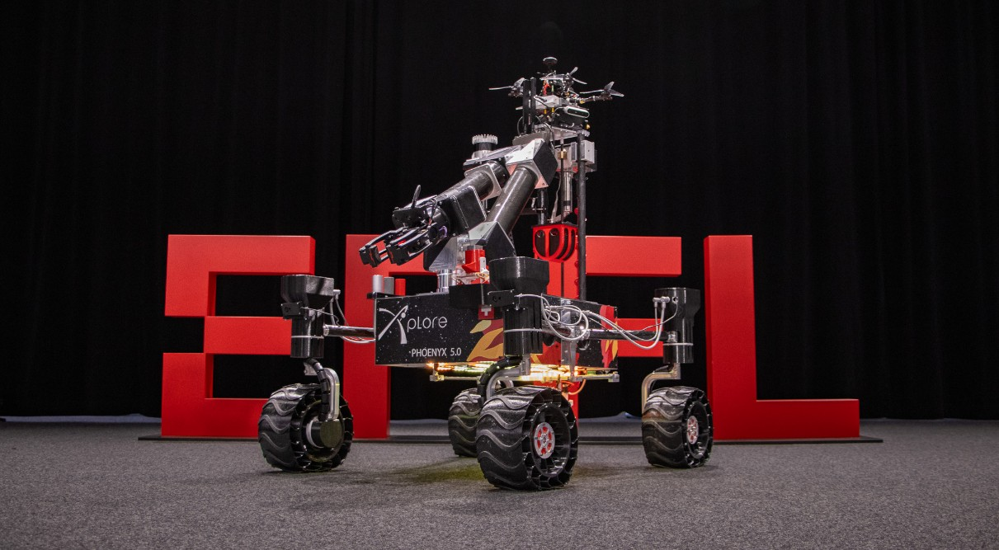
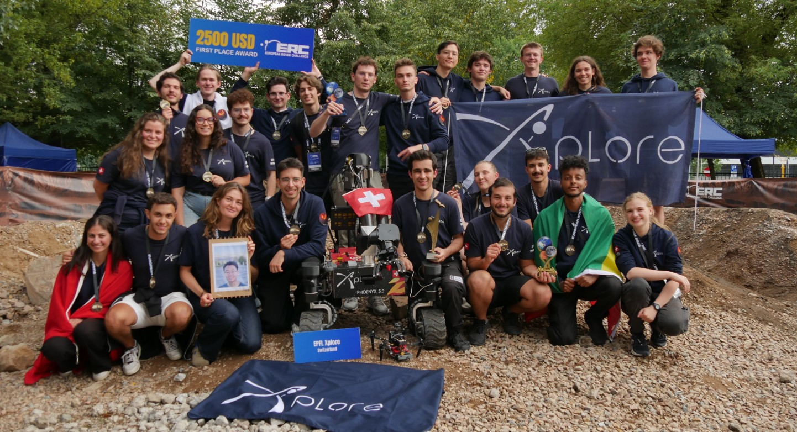
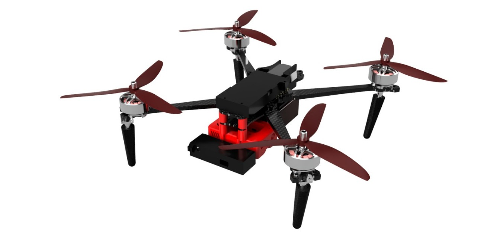
Robotic Arm ROS2 Pipeline
The six-joint robotic arm originally used a fragmented control architecture. Automatic motion planning was connected to ros2_control, while other operating modes relied on separate custom hardware paths. I refactored the system so the arm and gripper could share one modular control framework and switch controllers at runtime.
Unified Architecture
The pipeline was built around the ROS2 controller_manager. MoveIt generated collision-checked joint trajectories for automatic inverse kinematics and sent them to the joint_trajectory_controller. Manual commands used a velocity controller to move individual joints continuously in real time. This made the same robot description and controller configuration usable in simulation and, later, on physical hardware.
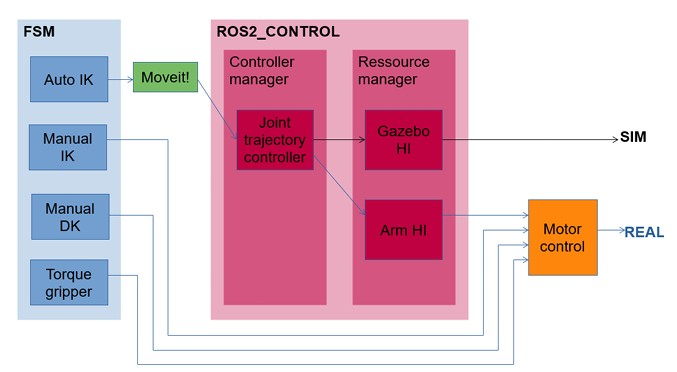
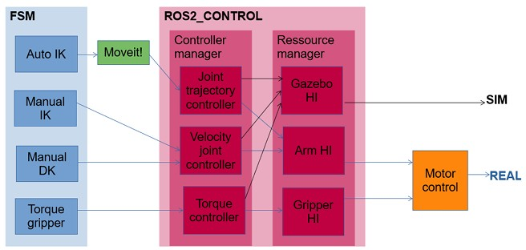
Custom Hardware Interface
A custom hardware_interface::SystemInterface connected the controllers to the simulated robot. The interface initialized and validated the joint configuration, exported position, velocity, and effort states, exposed the required command interfaces, and synchronized commands and feedback through its read() and write() cycles.
| Layer | Implementation |
|---|---|
| Motion Planning | MoveIt automatic IK, trajectory planning, and collision checking |
| Arm Control | Position trajectories and manual joint-velocity commands |
| Gripper Control | Effort commands for torque-based opening and closing |
| Simulation | Gazebo physics with shared ROS2 controller configuration |
| Visualization | RViz joint states, trajectories, and end-effector poses |
Gripper Control Strategy
The physical gripper motors did not include encoders, so precise finger-position feedback was unavailable and unnecessary for the open-and-close task. Instead of estimating position, I configured effort command interfaces and used torque control. The arm retained position and velocity control while the gripper received force commands through the same ROS2 architecture.
Simulation and Validation
The architecture was tested in Gazebo and monitored in RViz. Automatic trajectories generated by MoveIt executed correctly, manual joint-velocity commands produced smooth motion, joint limits were enforced, and torque commands opened and closed the gripper. State updates and controller commands remained synchronized throughout the simulations.


Year 2: Structure Team Leader (2023–2024)
Led a team of 8 in designing and fabricating the rover structure and drill:
- Rebuilt the structure of the new rover, iterating on and improving the previous design
- Redesigned the rover wheels for faster manufacturing and improved passive vibration damping
- Improved systems integration and cable management within the chassis
- Increased suspension rigidity by selecting better-suited carbon-fiber tubes
- Directed project planning, budgeting, and mechanical production
Year in Photos
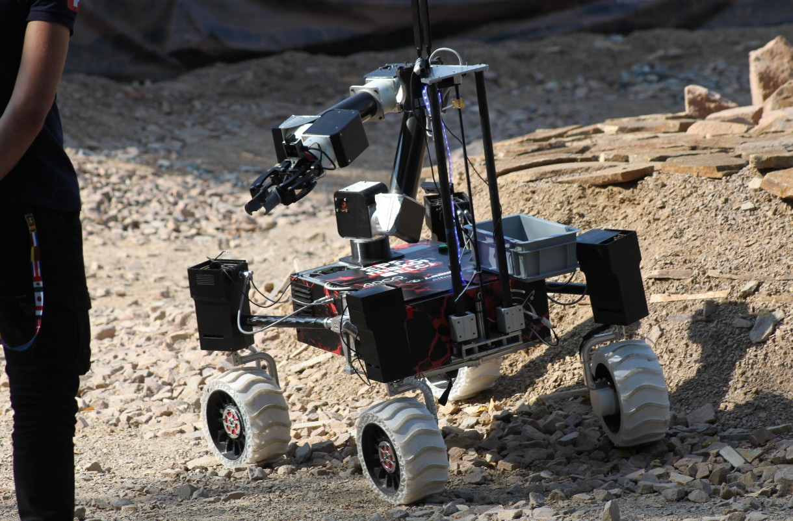
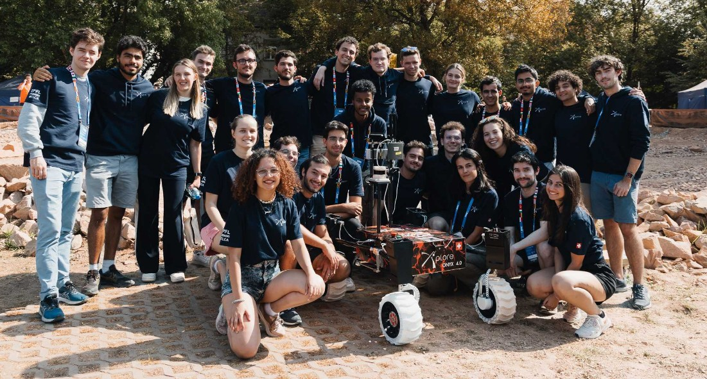
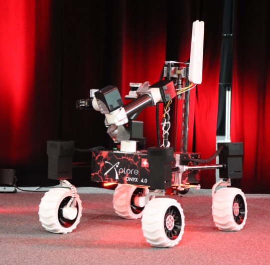
Wheel Design
Design Rationale
As the rover's first point of contact with the ground, the wheels are the primary passive element responsible for reducing terrain-induced vibrations. At the ERC, uneven surfaces and rocks of different sizes create repeated impacts that can propagate through the suspension and chassis. The wheel therefore needs enough compliance to deform around terrain features while remaining sufficiently rigid to support the rover's weight and maintain predictable motion.
To combine these requirements, the wheel was manufactured in a single bi-material 3D print. A rigid PETG rim provides structural support, while a flexible TPU tire deforms continuously at the contact patch. This deformation helps the rover adapt to rocky terrain and limits the vibrations transmitted into the structure without requiring a more complex wheel assembly.
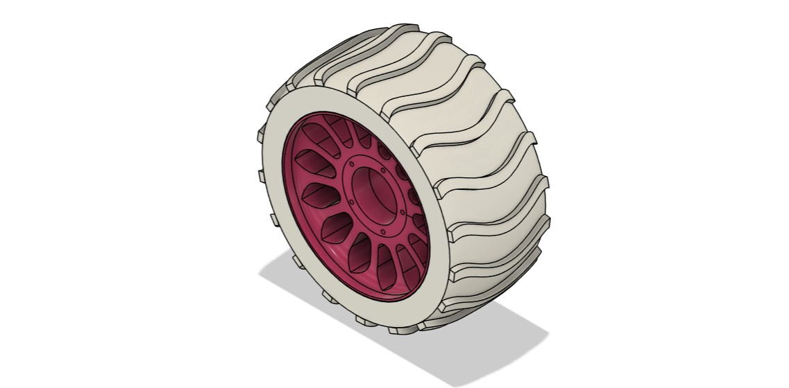
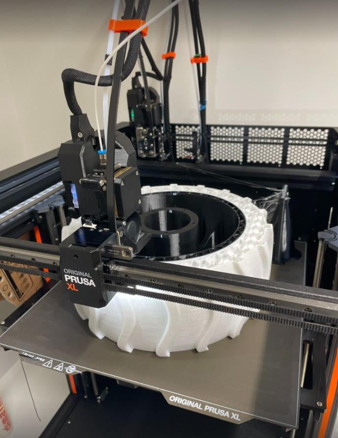
| Parameter | Value |
|---|---|
| Structure Material | PETG (stiff, lightweight) |
| Compliant Elements | TPU (flexible, shock-absorbing) |
| Manufacturing Method | Dual-material 3D printing |
| Manufacturing Time Reduction | ~60% vs previous design |
| Key Feature | Passive vibration damping on uneven terrain |
Year 1: Structure Member (2022–2023)
- Designed and iterated the differential system through rapid prototyping, producing final 2D manufacturing drawings
- Fabricated wheels by 3D printing inner rims and molds, casting PU coating for terrain grip
Year in Photos
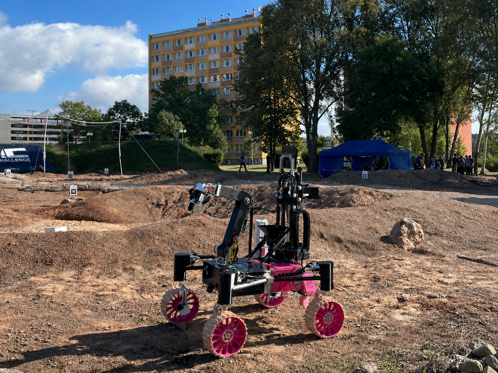
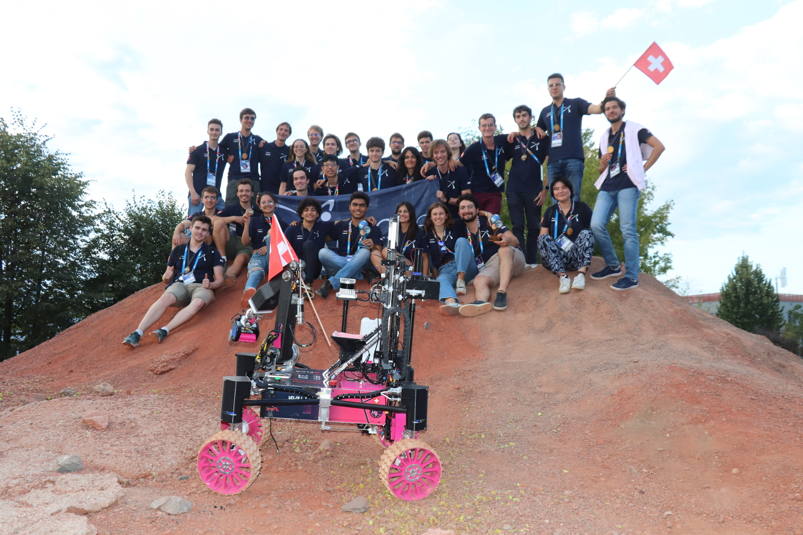
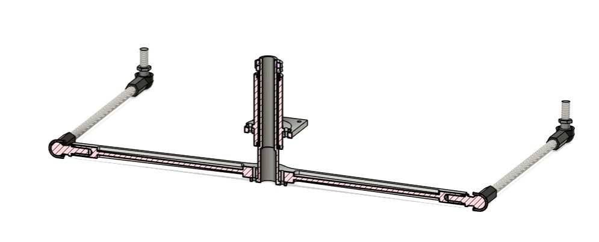